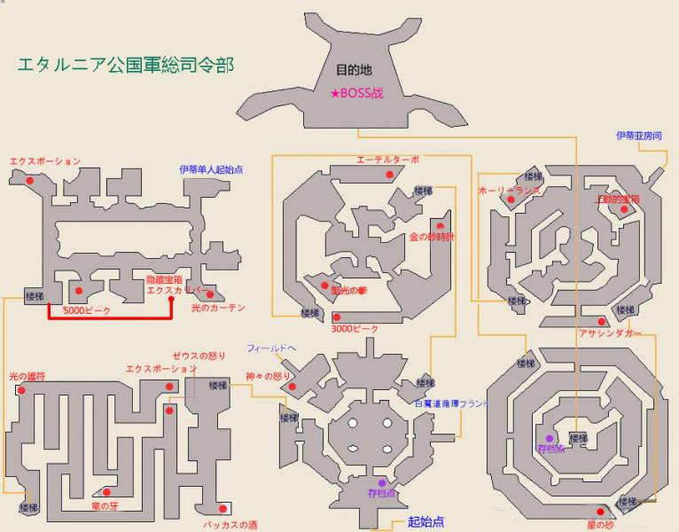

第四章 白与黑
伊蒂亚告诉众人，由于父亲的改革，阿塔尔尼亚没有水晶正教的存在，土之水晶在不死之塔，前往不死之塔则必要要经过阿塔尔尼亚和总司令部。由于无法戒备森严无法使用飞行船直接前往，众人决定步行。
将飞行船停在平原之后，众人徒步向阿塔尔尼亚城镇前进。但在之前，还要解决掉拦路抢劫的BOSS。
★BOSS战 アイスゴーレム（HP40000，弱炎）
Tips:物攻较高。皮薄队可以继续考虑防+一口气输出策略。……其实转4个召唤一回合必杀技状态下放五个火系召唤这种事我真的想过的……
清除了路障，四人终于来到阿塔尔尼亚。从同学的口中，伊蒂亚得知了母亲住院的消息，一行人前往中央医疗塔探望。
-前往中央医疗塔
心急如焚的伊蒂亚终于见到了母亲，幸好母亲的状态很好，并没有什么病态。没想到伊蒂亚母亲也知道风之巫女的事。伊蒂亚向母亲解释了自己违背父亲命令的理由，表示要为了自己的正义，解放土之水晶。进行到一半的话题，由于伊蒂亚母亲需要就诊而被打断了。
伊蒂亚向众人解释，阿塔尔尼亚的医疗是建立在抽取土之水晶的能量进行治疗的基础上的，尽管没有巫女的存在，阿塔尔尼亚医疗者还是通过长年的研究找出了实施方法。一旦解放土之水晶的力量，对医疗塔，医疗塔中的病患，以及伊蒂亚的母亲都会有极大的影响。就在众人犹豫之时，艾琳提出不能将阿塔尔尼亚的幸福建立在其他国家的灾难上，如果不解放土之水晶，整个世界都会陷入黑暗之中。伊蒂亚也表示赞同。再次确认了心意的众人，还是决定前往不死之塔。
Tips:此处可以说是练级圣地。可以考虑使用召唤师无脑升级（召唤师Brave三连击，其余三人防御）。空蓝回旅馆睡觉顺手存档，如此反复即可。建议刷到50以上继续之后的剧情。之后剧情较长，请准备好补给品。
－由街道西面出门前往エタルニア公国総司令部
Tips：共有三条路。两条较短，有BOSS把守，一条较长，无BOSS，请自行挑选。剧情推进后BOSS会消失。
★BOSS战 ドラゴンゾンビ（HP25000，弱炎）
Tips：该BOSS被打倒后有几率复活
★BOSS战 ガーディアン （HP60000，弱雷）
Tips：初期较弱，后期使用技能“リミッター解除（限制解除）”后能力会大增。建议等其血量低到一定程度后一口气击倒
公国軍総司令部

面对眼前熟悉而又陌生的建筑，伊蒂亚完全感觉不到回到故乡的安心，取而代之的反倒是寂寞和悲凉。此时，魔女维多利和维克多博士打破了伊蒂亚的思绪。
阿尼艾斯：你、你这家伙，到底为什么要对オリビア作出那种事！
维多利亚：为什么？啊，这个要怎么说呢，我不小心手滑了一下｡◕‿◕｡
阿尼艾斯：为什么……
维多利亚：你干嘛这副表情嘛，水晶巫女什么的，和蚂蚁又有什么区别嘛。你周围的人也和垃圾虫差不多嘛。
伊蒂亚：……（咬牙）说谁是垃圾虫呐！你这个豆丁小矮子……！
维多利亚：豆丁？！维克多，你听到了么？！
维克多：伊蒂亚大人！你怎么可以对维多利亚大人说出这么过分的话呢！我才不管你是不是元帅的亲生女儿，就凭你这句话，不杀了你难消我心头之恨！
林格阿贝尔：那么我也是！那边那位少女，你居然把伊蒂亚叫做垃圾虫，就算你长得再可爱也不能原谅！
伊蒂亚：……
维克多：……
维多利亚：哼哼，我今天感觉还不错呢，就让你们知道我们之间的实力差距到底有多少吧！
维多利亚玩闹式的攻击就让众人无所抵抗，关键时刻维多利亚再次身体不适，维克多带其离开。
-进入司令总部
四人紧追不舍，前往处在大门右侧的治疗室。
进入治疗时候，四人看到了泡在治疗设备之中的维多利亚，伊蒂亚质问维克多博士维多利亚到底是怎么回事，博士表示说来话长。
伊蒂亚：你这是在拖延时间么？好让维多利亚有时间补充魔力？
维克多：并不是的，准确地说，现在维多利亚所补充的，是她剩余的残存的生命力。说起来，这是很久之前的事了。
维克多：很久以前，在某个国家，有个被宣告了不治之症的孤苦伶仃的少女，没错，就是维多利亚大人。周围的医生都放弃了对她的治疗。孤身一人的她，只能痛苦地喘息着，在绝望中静静等待死神的降临。听到了那个少女声音的元帅殿下，将她带回了这个国家。
伊蒂亚：诶？父亲？
维克多：如果没有元帅阁下的话，她的性命早就不保了吧。
维克多：伊蒂亚大人也知道的吧，这个国家将白魔法运用在医疗上，颇有建树。进行着土之水晶研究解析的我，对她进行了治疗。但是，这项治疗还处在研究阶段，并没有完善。她虽然因此保住了性命，但也留下了超乎预料的副作用。正如你们所见，最近，病发的周期越来越短了。她越来越不能控制自己的情绪。看着她如此痛苦，扪心自问，我也不知道自己是不是真的能救她。但好不容易走到这一步，尽我的全力，我绝不会让她死的。无论过程多么艰难，我都要让她活下去。
维克多：这就是我对于自己的赎罪，将自己的一生奉献给她，除此之外，我的人生没有其他幸福可言。
维多利亚（砸破装置出现）：哼，一直在说些无聊的事。
恢复力的维多利亚向四人发起了攻击。
★BOSS战 ヴィクトリア（HP50000，弱光） ヴィクター（HP50000，弱暗）
Tips：前期维多利亚会使用「屍」对随机角色进行死亡宣告，万一抽到治疗那只能说你RP不好。
维多利亚会使用中毒暗魔法全体攻击，维克多则会提升两人的魔攻。建议先集火解决掉维多利亚。
前期白魔法师工作比较多，可以考虑排个副职缓解一下（虽然我没放- -）。暗/光护符选其一佩戴，会使战斗轻松一些。总而言之这场战斗只要稳住前期就可以轻松取胜。
-战斗结束后魔人职业开启
-战斗结束后导师职业开启
打败了魔女和博士，众人打算突破司令总部，却不想中了埋伏，除了伊蒂亚外的三人被关入地牢。
在自己房间中醒来的伊蒂亚逃脱了监视，孤身一人前去营救提兹等人。
-操作伊蒂亚救出三人
Tips：注意队员回归后重新设定技能/副职/好友
到达最后的门前，伊蒂亚却发现钥匙无效，此时老师出现了。没想到老师居然是公国议会的创始人。老师的一番话让大家开始重新思考自己的所作所为。最后，确认了众人觉悟的老师帮助提兹等人打开了最后的锁。
另一方面，强nu之末的公国元帅圣骑士让自己的亲信暗骑士自行离开，“如果你不离开的话，我复兴公国的理由，六人议会组//织的前身，以及只有我和那两个老人知道的真相，大概就会永远地隐没在黑暗之中了。”（……好、大、一、个、坑）
Tips:调查48F右上方伊蒂亚房间床可休息
圣骑士和伊蒂亚都不肯让步，两人都坚持自己的一方才是正义。最终父女只能刀刃相向。
★BOSS战 聖騎士ブレイブ（HP35000×3，弱暗）
Tips:元帅喜欢防御，掌握错了攻击时机会让人很烦恼。并且他会复活两次。
父亲大人的心事太难猜，记得多准备点补给。
-战斗结束后圣骑士职业开启
伊蒂亚的母亲及时赶来，圣骑士安慰了将这一切都归咎于自己的太太（……是时臣的错啊和太太你没有关系！），向妻子和女儿露出了笑容，怀着对二人的爱闭上了眼睛。赶来的リスター卿确认元帅并没有生命危险，只是失去了意识，不过就算他的伤势能够痊愈，以后也再也不能持剑作战了。
リスター卿向伊蒂亚解释，由于圣骑士的努力，这个国家的医疗有了近一百年的进步，所以伊蒂亚不用顾虑会因解放土之水晶而使母亲丧命。
无论如何，四人还是怀着复杂的情绪，前往不死之塔。
-前往不死之塔
Tips：元帅倒下之后就可以直接用飞行船而不用担心被炮击了
不死之塔
众人终于到达了最后的土之水晶所在，不死之塔。
Tips：此处地形较复杂，最快到达土之神殿的路径为，1F左上向上楼梯-2F中央向上楼梯-前进
来到土之水晶前，定番魔物出现。
★BOSS战 ギガースリッチ（HP80000，弱光）
Tips：BOSS会使用负之力，每回合伤害增加，战线拖的越长越不利。另外会释放单体即死魔法，造成恐惧异常，几轮负之力之后的群攻伤害也很可观。猎人的尸灵系强化或者装备光属性武器的海贼都是不错的选择。
-解放土之水晶
*支援技能栏+1
至此四枚水晶终于被全部解放。水晶精灵艾琳这还不是结束。在四枚水晶被解放后，世界的某处会出现光之柱ホーリーピラー。在光之柱放置艾琳的胸章之后，神圣的原初之光就会笼罩整个世界，所有的黑暗都会被净化，谜之大洞也会因此而消失。于是众人前往最后的目的地，光之柱。
-返回大地图使用飞行船
迎接众人的ラッツ汇报了有不明漆黑飞行船飞过的事。
-前往大地图“！”处，进入光之柱
Tips：进入光之柱之后不能返回，请做好准备
正在众人要往光柱深处进发之时，暗黑骑士出来试图阻挠众人的脚步。
★BOSS战 アナゼル（HP100000）
Tips：暗黑属性物攻，佩戴对应首饰+导师lv9圣者技能治疗没压力。血量过半会使用单体9999攻击技能サガク剣。战斗快进入后半段时请一口气解决他。（其实这货是个好人呐，对伊蒂亚好的真心没话说）
-战斗结束后暗黑骑士职业开启
战斗后大家看到了アナゼル的脸，居然和林格阿贝尔长得一模一样。船身因战斗剧烈震荡，アナゼル不幸掉下了船，从他身上也掉落了一本D的笔记。由于船身摇晃的太过激烈，众人决定先进舱内躲避后再行商议。
船身的震荡越来越激烈，仿佛在被一种看不到的力量所吸引着。阿尼艾斯呼唤艾琳，却得不到任何回应，此时一道白光……